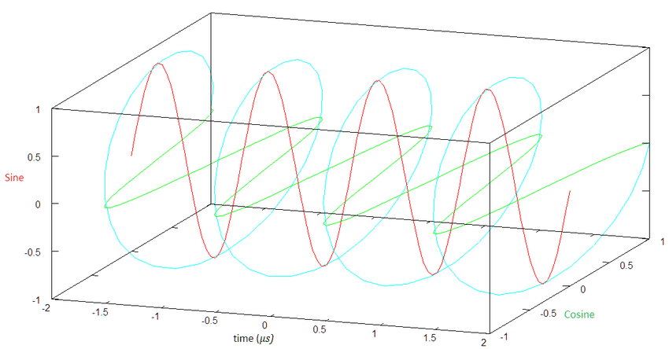

Interpretations of correlation and inner product
Interpretations of correlation, inner product and Fourier coefficients.
As seen in the Cross-correlation, Correlation, Convolution, Inner product and Fourier coefficients blog post, the \(\int_{- \infty}^{\infty}f(t)\overline{g(t)}dt\) quantity for two complex-valued functions \(f\) and \(g\) can be seen as:
The correlation \((f \star g)(0)\) between \(f\) and \(g\).
The \(L^{2}\) inner product \(\langle f,g\rangle\) between \(f\) and \(g\).
- Which can itself be seen as the inner product between two infinite-dimensional real or complex vectors.
\(\langle f,g\rangle = (f \star g)(0) = \int_{- \infty}^{\infty}f(t)\overline{g(t)}dt\)
This blog post explores how the above quantity \(\langle f,g\rangle = (f \star g)(0) = \int_{- \infty}^{\infty}f(t)\overline{g(t)}dt\) can be interpreted from Correlation and Inner product point of views.
Correlation
The correlation between two complex-valued functions \(f\) and \(g\) is
\(\langle f;g\rangle = (f \star g)(0) = \int_{- \infty}^{\infty}f(t)\overline{g(t)}dt = \int_{- \infty}^{\infty}\left| f(t) \right|\ \left| g(t) \right|\ e^{i(arg(f(t)) - arg(g(t)))}\ dt\)
It can be interpreted as the weighted sum of the pointwise similarities of \(f\) and \(g\) where:
The pointwise similarity between two points \(f(t)\) and \(g(t)\) is defined as the phase alignment complex vector \(e^{i(arg(f(t)) - arg(g(t)))}\ \).
The weights are the products of the magnitudes \(\left| f(t) \right|\ \left| g(t) \right|\).
The correlation is the weighted sum of the pointwise phase alignment complex vectors.
It is a complex number.
Its phase represents the global phase alignment between \(f\) and \(g\).
Its magnitude represents how similar \(f\) and \(g\) are.
If \(f\) and \(g\) have almost always the same phase alignment, the phase alignment vectors \(e^{i(arg(f(t)) - arg(g(t)))}\ \) all point in a similar direction and their weighted sum has a large magnitude.
Otherwise they don’t sum constructively and their weighted sum has a small magnitude.
The magnitude tends towards \(0\) if there is no correlation between the pointwise phases of \(f(t)\) and \(g(t)\).
Why use the conjugate?
Because without the conjugate, instead of summing the phase alignment vectors \(e^{i(arg(f(t)) - arg(g(t)))}\ \), the correlation would sum vectors \(e^{i(arg(f(t)) + arg(g(t)))}\ \) which rotate even if \(f\) and \(g\) are equal.
For example if \(f\) is a rotating vector \(e^{it}\), its correlation with itself would be \(\int_{- \infty}^{\infty}e^{i2t}dt = 0\).
Real-valued functions
If \(f\) and \(g\) are real
\(arg(f(t))\) and \(arg(g(t))\) can only be 0, \(\pi\) or undefined (if \(f(t) = 0\) or \(g(t) = 0\)).
The phase alignment vectors \(e^{i(arg(f(t)) - arg(g(t)))}\ \) can only be 1, -1 or undefined.
The correlation is the weighted sum of the pointwise sign agreements between \(f\) and \(g\).
Inner product
The \(L^{2}\) inner product between two complex-valued functions \(f\) and \(g\) is
- \(\langle f,g\rangle = \int_{- \infty}^{\infty}f(t)\overline{g(t)}dt\).
Cauchy-Schwarz inequality
The Cauchy-Schwarz inequality states the following 3 equivalent forms
\(\left| \langle u,v\rangle \right|^{2} \leq {\| u\|}^{2}{\ \| v\|}^{2}\)
\(\left| \langle u,v\rangle \right|^{2} \leq \langle u,u\rangle\langle v,v\rangle\)
\(\left| \langle u,v\rangle \right| \leq \| u\|\ \| v\|\)
The inequalities above turn to equalities if and only if \(u\) and \(v\) are collinear, i.e. \(u = \lambda v\) (see When does the Cauchy-Schwarz inequality turn to equality? below).
This means that for two vectors \(u\) and \(v\) with constant norms, their inner product is maximal when \(u\) and \(v\) are collinear, i.e. \(u = \lambda v\).
Interpretations
Real-valued functions
\(\langle u,v\rangle\) is maximal when \(u\) and \(v\) are equal up to a real scaling factor \(\lambda\),
- i.e. when they are proportional.
Complex-valued functions
\(\langle u,v\rangle\) is maximal when \(u\) and \(v\) are equal up to a complex scaling factor \(\lambda\),
i.e. when they are complex proportional,
i.e. when,
their point-wise magnitudes are equal up to a scaling factor,
- \(\left| u(t) \right| = |\lambda|\left| v(t) \right|\)
and their point-wise phase difference is constant
- \(arg(f(t)) - arg(g(t)) = arg(\lambda)\ \)
i.e. their point-wise magnitudes are scaled and their point-wise phases are shifted by a constant offset.
When does the Cauchy-Schwarz inequality turn to equality?
The proof that the Cauchy-Schwarz inequality turn into an equality if and only if \(u\) and \(v\) are collinear, i.e. \(u = \lambda v\) can be done in two steps.
Proof for \(u = \lambda v \Rightarrow \langle u,v\rangle = \| u\|\ \| v\|\)
- \(\left| \langle u,v\rangle \right| = \left| \langle\lambda v,v\rangle \right| = |\lambda|{\| v\|}^{2} = |\lambda|\| v\|\| v\| = \|\lambda v\|\| v\| = \| u\|\| v\|\)
Proof for \(\langle u,v\rangle = \| u\|\ \| v\| \Rightarrow u = \lambda v\)
- Let \(w = u - \frac{\langle u,v\rangle}{{\| v\|}^{2}}v\)
\({\| w\|}^{2} = {\| u - \frac{\langle u,v\rangle}{{\| v\|}^{2}}v\|}^{2}\)
\(= \langle u - \frac{\langle u,v\rangle}{{\| v\|}^{2}}v,\ u - \frac{\langle u,v\rangle}{{\| v\|}^{2}}v\rangle\)
\(= \langle u,\ u\rangle - \frac{\overline{\langle u,v\rangle}}{{\| v\|}^{2}}\langle u,v\rangle - \frac{\langle u,v\rangle}{{\| v\|}^{2}}\langle v,\ u\rangle + \frac{\langle u,v\rangle\overline{\langle u,v\rangle}}{{\| v\|}^{4}}\langle v,v\rangle\)
\(= {\| u\|}^{2} - \frac{\left| \langle u,v\rangle \right|^{2}}{{\| v\|}^{2}} - \frac{\langle u,v\rangle}{{\| v\|}^{2}}\overline{\langle u,v\rangle} + \frac{\left| \langle u,v\rangle \right|^{2}}{{\| v\|}^{4}}{\| v\|}^{2}\)
\(= {\| u\|}^{2} - \frac{\left| \langle u,v\rangle \right|^{2}}{{\| v\|}^{2}} - \frac{\left| \langle u,v\rangle \right|^{2}}{{\| v\|}^{2}} + \frac{\left| \langle u,v\rangle \right|^{2}}{{\| v\|}^{2}}\)
\(= {\| u\|}^{2} - \frac{\left| \langle u,v\rangle \right|^{2}}{{\| v\|}^{2}}\)
- And thus, because \(\left| \langle u,v\rangle \right| = \| u\|\| v\|\)
\({\| w\|}^{2} = {\| u\|}^{2} - \frac{\left| \langle u,v\rangle \right|^{2}}{{\| v\|}^{2}} = {\| u\|}^{2} - \frac{{\| u\|}^{2}\ {\| v\|}^{2}}{{\| v\|}^{2}} = 0\)
Thus, \(w = 0\).
Thus, \(u = \frac{\langle u,v\rangle}{{\| v\|}^{2}}v\).
Thus, \(u\) and \(v\) are collinear (\(u = \lambda v\)).
Hence, \(\left| \langle u,v\rangle \right| = \| u\|\ \| v\| \Leftrightarrow u = \lambda v\).
Application to the Fourier transform
The Fourier coefficients \(F(\xi) = \langle f,e^{i2\pi\xi\tau}\rangle = (f \ast e^{i2\pi\xi\tau})(0) = \int_{- \infty}^{\infty}f(\tau)e^{- i2\pi\xi\tau}d\tau\) is thus,
A complex number
Its phase represents the global phase alignment between \(f\) and \(e^{i2\pi\xi t}\).
Its magnitude represents how similar \(f\) and \(e^{i2\pi\xi t}\) are.
However, \(f\) is real thus,
The \(L^{2}\) inner product is never maximal.
\(f\) and \(e^{i2\pi\xi t}\) are never collinear.
But if \(f(t) = sin(2\pi\xi t)\)
\(f\) and \(e^{i2\pi\xi t}\) have similar phase alignments.
The phase alignment vectors don’t sum maximally but they sum constructively.
Their weighted sum has a large magnitude even though it is not maximal.

Conclusion
The \(\int_{- \infty}^{\infty}f(t)\overline{g(t)}dt\) expression is equal to
The correlation \((f \star g)(0)\) between \(f\) and \(g\).
The \(L^{2}\) inner product \(\langle f,g\rangle\) between \(f\) and \(g\).
Correlation
From the correlation point of view, we can see that
It is the weighted sum of the pointwise phase alignment complex vectors.
It is a complex number.
Its phase represents the global phase alignment between \(f\) and \(g\).
Its magnitude represents how similar \(f\) and \(g\) are.
Real-valued functions
If \(f\) and \(g\) are real
The phase alignment vectors can only be 1, -1 or undefined.
The correlation is the weighted sum of the pointwise sign agreements between \(f\) and \(g\).
Inner product
From the inner product point of view, the Cauchy-Schwarz inequality tells us that \(\langle f,g\rangle\) is maximal when \(f\) and \(g\) are collinear, i.e. \(f = \lambda g\).
Real-valued functions
\(\langle f,g\rangle\) is maximal when \(f\) and \(g\) are equal up to a real scaling factor \(\lambda\),
- i.e. when they are proportional.
Complex-valued functions
\(\langle f,g\rangle\) is maximal when \(f\) and \(g\) are equal up to a complex scaling factor \(\lambda\),
- i.e. when their point-wise magnitudes are scaled and their point-wise phases are shifted by a constant offset.
Application to the Fourier transform
The Fourier coefficients \(F(\xi) = \langle f,e^{i2\pi\xi\tau}\rangle = (f \ast e^{i2\pi\xi\tau})(0) = \int_{- \infty}^{\infty}f(\tau)e^{- i2\pi\xi\tau}d\tau\) is thus,
A complex number
Its phase represents the global phase alignment between \(f\) and \(e^{i2\pi\xi t}\).
Its magnitude represents how similar \(f\) and \(e^{i2\pi\xi t}\) are.
However, \(f\) is real thus,
The \(L^{2}\) inner product is never maximal.
\(f\) and \(e^{i2\pi\xi t}\) are never collinear.
But if \(f(t) = sin(2\pi\xi t)\)
\(f\) and \(e^{i2\pi\xi t}\) have similar phase alignments.
The phase alignment vectors don’t sum maximally but they sum constructively.
Their weighted sum has a large magnitude even though it is not maximal.